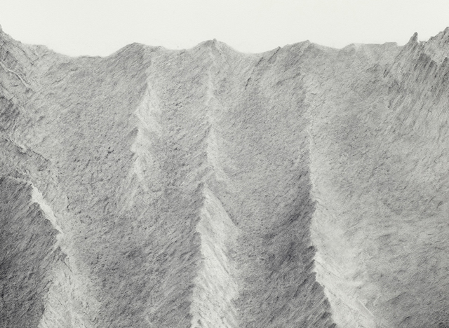
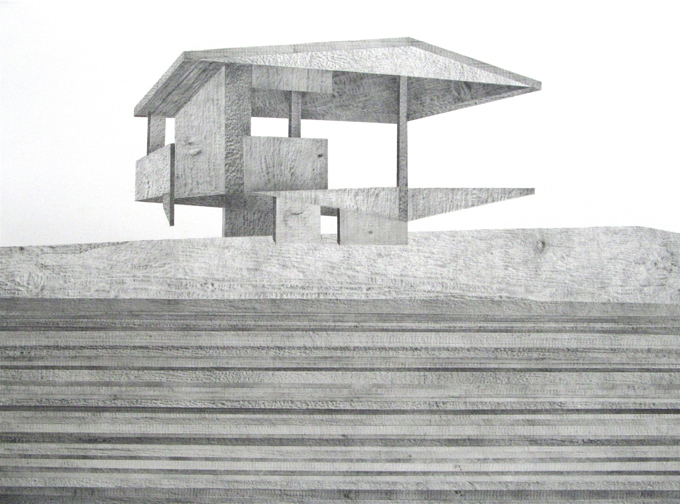
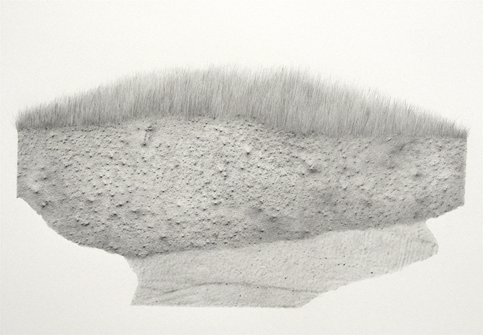
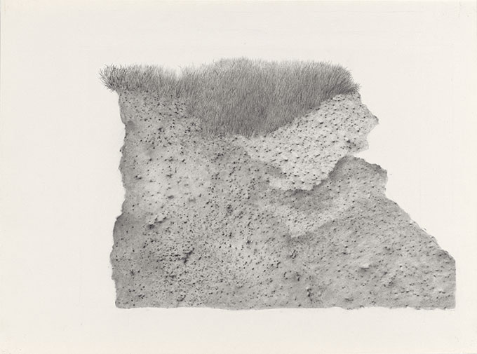
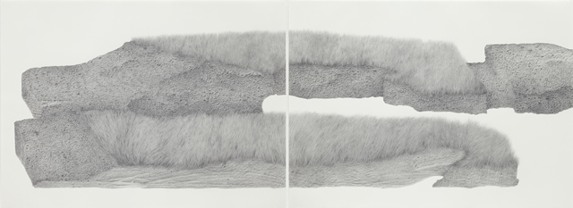

home
Re-Natured 2019 -2020
Model Series 2011 - 2014
Evidence of Doubt 2011 - 2013
Regeneration 2006 - 2010
Under False Colours 2004
Works 1996 - 2000
contact
biography
Model Series 2011 - 2014  Ridge, 2014, Graphite frottage on paper, 26 x 29cm. The drawings are a continuation of my interest in the relationship between the real and the artificial or invented. The idea of a model being a representation of something which either exists (an authentic representation of the real thing) or which is the 3D embodiment of an imagined object, is one which I find interesting in relation to the act of drawing and representation in two dimensions. Boxed earth, Geographical and Architectural Models: For these three groups of drawings, the inspirational replicas or models were either resin casts of soil and glass boxed earth specimens (1:1 in scale), the mould- made model forms of vast mountain ranges or the scaled down wooden projections of the real or future world, found in architectural models. The drawings incorporate surface rubbings from the physical world and pure invention to make both a conceptual and visual play with the real and potential scale of the object depicted.  'Platform' 2012, Awarded Judges Special Commendation, Jerwood Drawing Prize 2012.  Cast, 2011, Graphite on Paper, 42 x 60 cm  'Monument', 2011 (from Model Series) Graphite frottage on paper, 28x38cm Acquired by the Fitzwilliam Museum, Cambridge.
 Landscape, 2013 (from Model Series).
Apparitions: Frottages and Rubbings from 1860 to Now. Author, Allegra Pesenti. Published by The Menil Collection, Houston and The Hammer Museum, Los Angeles. Distributed by Yale University Press. ISBN 978-0-300-21469-7 |